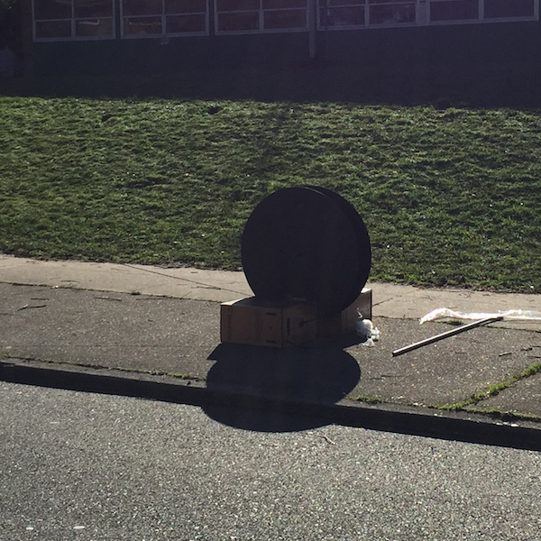
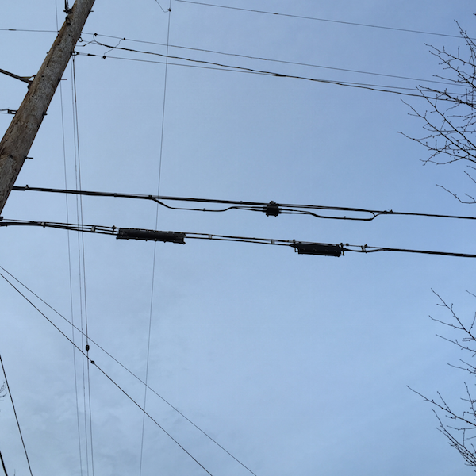
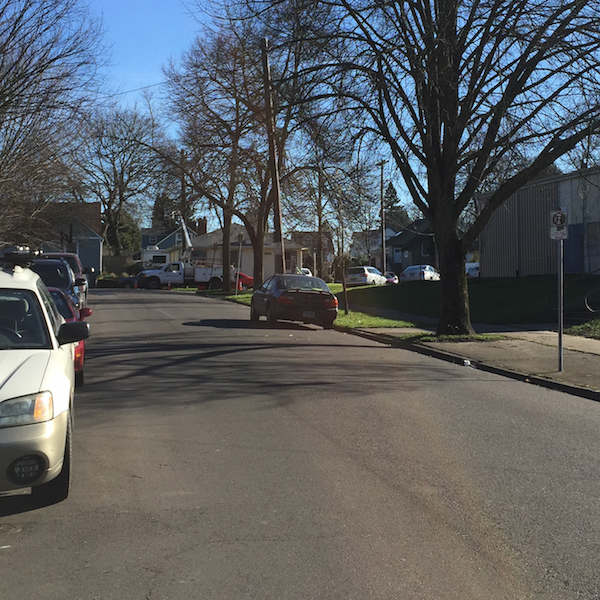
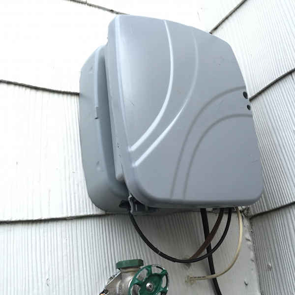
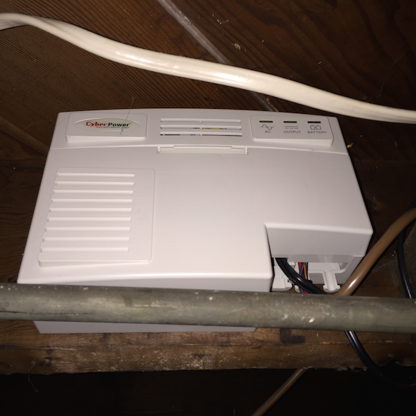
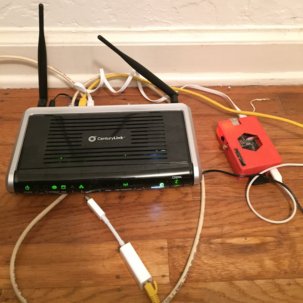

Gigabit Fiber in Portland
Review of 1Gb fiber from CenturyLink
Yesterday I got Gigabit fiber Internet installed at home in Portland, OR from CenturyLink. If you haven't checked out how fiber works here's a good intro video. The variety that CenturyLink offers is a passive optical network consisting of fiber optic cables strung up on telephone poles around town.

Here's the result of a speedtest I did today:
Gigabit fiber probably isn't practical for most Internet users today because it's more bandwidth than most Internet applications know what to do with. However, in a few years time, as more people get retina screens, 4K TVs, 8TB hard drives and neighbors with fiber Internet who stream super-HD video then there will hopefully be a tipping point. And the fiber infrastructure is relatively future-proof.
My day job is to work on data replication tools for really large scientific datasets so I jumped at the opportunity to get it at home.
CenturyLink vs Google Fiber
CenturyLink costs $109 a month (for the first year) and Google Fiber is $70 a month. Both offer 1000mbps up/1000mpbs down (133MB/s) with no download/upload limits or caps. CenturyLink's ToS states "Residential 1 Gbps plans are not subject to download limits" and this has been verified by the Seattle Mayor's office. Google Fiber's ToS also states they do "not employ volume-based data caps".
CenturyLink seems to be quite secretive when it comes to disclosing the price after the first 12 months. From looking at my first bill it seems their 'standard rate' for gigabit appears to be $153.95, and they give a $44.00 per month discount for the first 12 months of service. This information isn't advertised publicly on their website (from what I can tell).
The only major difference (beyond price) that I can find is that Google Fiber specifically prohibits commercial servers, but CenturyLink does not seem to.
CenturyLink's FTTH (Fiber To The Home) service seems to currently be in most of inner SE Portland (where I live).
Google Fiber isn't in Portland yet, and might never be. If I had the choice between Google Fiber and CenturyLink on my block, I would pick Google because of the price. That being said I am still incredibly excited to get gigabit internet direct to my home for less than some of my friends pay for their cell phone.
There's another local ISP doing Gigabit fiber in Portland called Fibersphere but they only offer it in selected apartment buildings and are still working on their broader rollout strategy.
Installation
You pay a (roughly) $100 setup fee and then another $100 for an Actiontec C2000A modem/router. They send a technician (or in my case two) out to your house for the 3-5 hour installation process.
First they allocate you a fiber optic cable up to 500ft in length. In my case it was 450. Here it is on the sidewalk outside:

They have to run it along the aerial wiring along your street and connect it to the nearest fiber splitter, which are little black boxes attached to aerial wires.

In my case the nearest one was at the end of my block. They actually said that starting from two more houses down the block from me they wouldn't be able to offer fiber service because it would exceed the 500ft limit.

Then they put a optical terminator on the outside of your house. This thing converts data from the fiber optic cable into ethernet, which then enters your home and goes into the modem/router. Behind the terminator is the 'slack box' which holds the extra spooled fiber extension cable.

They also throw a power unit for the terminator in your basement.

Finally here is the modem/router combo unit they provided. It supports Gigabit Ethernet but only 802.11N wireless, meaning wireless bandwidth is limited to around 100Mbps.

Attached to the yellow cat6 ethernet cable is an Apple Thunderbolt to Gigabit Ethernet adapter. The speed test from the top of this article was made while plugged in using this on a mid-2013 MacBook Air.
I also have a Raspberry Pi running a Tor Relay Node.
All in all it must cost CenturyLink quite a bit of money to upgrade a house to fiber, much more than the $100 in setup fees. Hopefully Google Fiber (and others!) enter the market to keep the competition going.
See you in the future!